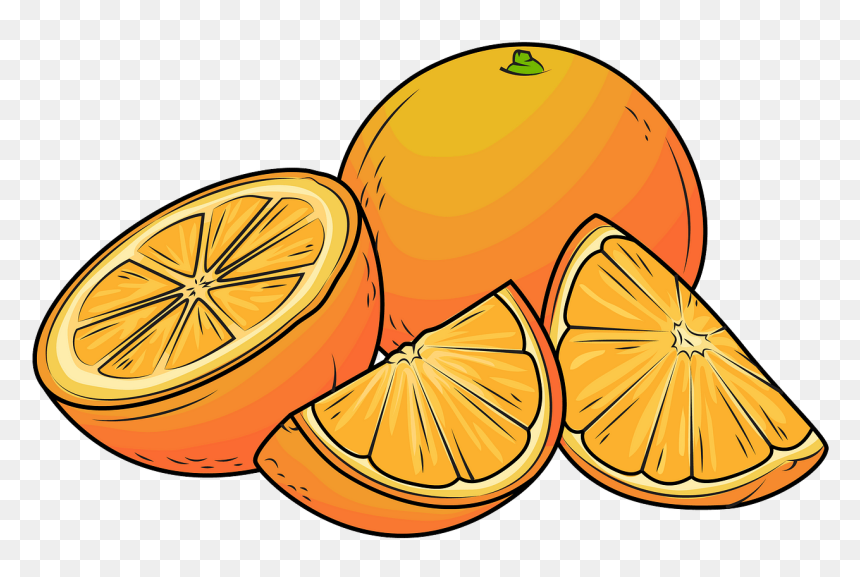

---Everything Citrus---

Common citrus fruits include oranges, lemons, limes, grapefruit, mandarins,
tangerines, clementines, and pomelos, along with less common varieties like
kumquats and citrons. These fruits, produced by trees in the genus Citrus,
are known for their thick, leathery rinds and juicy, acidic pulp, and are
grown in warm regions
Common Citrus Fruits
- Oranges: A round, sweet fruit, good for eating and juicing.
- Lemons: An oval-shaped fruit with a sour, acidic taste, often used in drinks, baking, and to add flavor to food.
- Limes: Green, sour fruits typically used for their juice and zest, adding a puckery flavor to sauces and drinks.
- Grapefruits: Large, round or oval fruits that can be white, yellow, pink, or red, with red varieties being sweeter.
- Mandarins, Tangerines, and Clementines: Smaller, sweet varieties of oranges, often easy to peel.
Other Citrus Fruits
- Pomelos (Pummelo): Similar in size to grapefruits but typically larger and sweeter.
- Kumquats: Small citrus fruits with a thin, edible skin and firm, juicy flesh.
- Citron: A citrus fruit with a thick rind, grown for its aromatic peel.
- Ugli Fruit: A hybrid citrus fruit known for its rough, greenish-yellow skin.
- Blood Oranges: A variety of orange with red-colored flesh, often sweeter than other oranges.